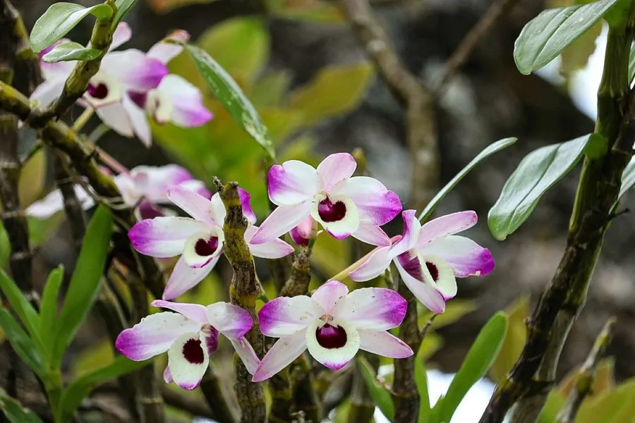

花卉与草本 · 植物界
石斛兰 Dendrobium nobile

兰科石斛属附生草本，茎节明显、花朵艳丽，是著名观赏兰花，也是传统中药材石斛的来源之一，原产亚洲南部。
- 分类
- 门被子植物门纲木兰纲目天门冬目科兰科属石斛属
- 栖息环境
- 亚洲南部的树干与岩石上，喜温暖、湿润、半阴
- 地理分布
- 原产中国南方、喜马拉雅地区及东南亚，中国西南与华南有分布
- 保护级别
- 暂无评估；中国国家二级重点保护野生植物（石斛属），CITES 附录Ⅱ
物种志
石斛兰为兰科石斛属附生草本，茎丛生，圆柱形，长 30–60 厘米，节明显，肉质。叶片互生，长圆形，革质，脱落或半脱落。花自茎节抽出，单生或数朵成总状花序，花大，直径 5–8 厘米，有白、粉、紫等色，唇瓣基部常有深色斑块，花期 3–5 月；果实为蒴果。
石斛兰原产中国南方、喜马拉雅地区及东南亚，附生于树干和岩石上，喜温暖、湿润、通风和半阴的环境，忌积水和强光。它是兰科中重要的观赏类群，花姿优雅、花期长，常作盆栽和切花；同时石斛属多个物种是中药材“石斛”的来源，有滋阴清热之效。野生石斛属植物已列入国家重点保护野生植物名录和 CITES 附录Ⅱ，购买时宜选择人工繁殖的植株。
形态与习性
- 株高茎长 30–60 厘米，节明显
- 花期3–5 月，花大而艳丽
- 果期花后结蒴果
- 光照喜半阴散射光，忌强光
- 水分喜湿润，空气湿度宜 60% 以上
- 土壤以树皮、水苔等基质附生栽培
- 繁殖分株、扦插、组培
- 主要用途观赏盆栽、切花、中药材
趣味知识
- 石斛兰的茎一节一节的，节间明显，是识别石斛属植物的重要特征。
- 它附生于树干和岩石上，靠气生根吸收水分和养分。
- 石斛属多个物种是中药“石斛”的来源，有滋阴清热之效。
- 野生石斛属植物受国家保护并列入 CITES 附录Ⅱ，宜选购人工繁殖个体。